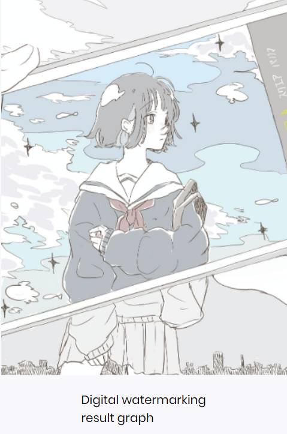

前端水印
水印其实并不是一个陌生的词，很多网站都有着自己的水印。使用水印可以很好的保护产权。一般的水印又分可见水印和不可见水印。
可见水印
可见水印的类型有很多，有一些是整图覆盖在图层上的水印，还有一些是在角落。
可见水印的生成方式主要可以归为两类，一种是 纯 html 元素(纯div)，另一种则为背景图（canvas/svg）。
纯 html 元素(纯div)
首先是HTML的内容
<body>
<!--文本内容-->
<div class="app">
<h1>Erio</h1>
<p>L-htian<p>
</div>
<script src="js/watermark.js"></script>
</body>首先我们来生成一个水印块，就是上面的 一个个Lhtian。这里主要有一点就是设置一个透明度（为了让水印看起来不是那么明显，从而不遮挡我们的主要页面），另一个就是一个旋转，如果是正的水平会显得不是那么好看，最后一点就是使用 user-select 属性，让此时的文字无法被选中。CSS 属性 user-select 控制用户能否选中文本。除了文本框内，它对被载入为 chrome 的内容没有影响
function cssHelper(el, prototype) {
for (let i in prototype) {
el.style[i] = prototype[i]
}
}
const waterWrapper = document.createElement('div');
cssHelper(waterWrapper, {
position: 'fixed',
top: '0px',
right: '0px ',
bottom: '0px',
left: '0px',
overflow: 'hidden',
display: 'flex',
'flex-wrap': 'wrap',
'pointer-events': 'none'
})有了一个水印片，我们就可以通过计算屏幕的宽高，以及水印的大小来计算我们需要生成的水印个数。
const waterHeight = 100;
const waterWidth = 180;
const { clientWidth, clientHeight } = document.documentElement || document.body;
const column = Math.ceil(clientWidth / waterWidth);
const rows = Math.ceil(clientHeight / waterHeight);
function createItem() {
const item = document.createElement('div')
item.innerHTML = 'Lhtian'
cssHelper(item, {
position: 'absolute',
top: `50px`,
left: `50px`,
fontSize: `16px`,
color: '#000',
lineHeight: 1.5,
opacity: 0.1,
transform: `rotate(-15deg)`,
transformOrigin: '0 0',
userSelect: 'none',
whiteSpace: 'nowrap',
overflow: 'hidden',
})
return item
}
for (let i = 0; i < column * rows; i++) {
const wrap = document.createElement('div');
cssHelper(wrap, Object.create({
position: 'relative',
width: `${waterWidth}px`,
height: `${waterHeight}px`,
flex: `0 0 ${waterWidth}px`,
overflow: 'hidden',
}));
wrap.appendChild(createItem());
waterWrapper.appendChild(wrap)
}
document.body.appendChild(waterWrapper)最终结果实现为
背景图（canvas/svg）
本次作业我使用的是canvas画布实现明水印
首先是HTML的内容
<img src="img/wm.jpg" id="img-vwm">
<canvas id="myCanvas" width="384" height="502" >您的浏览器不支持Canvas</canvas>简简单单的把图放上去，并添加一块canvas画布，设置画布宽高，下面使用js将水印画在画布上，可以理解为将想要加水印的图绘制在canvas画布上，然后在绘制了图的画布上再进行水印添加，而添加的水印就相当于在画布上进行文字添加
const img = new Image();
//为新建的img赋值src
const mImg = document.getElementById("img-vwm");
img.src = mImg.getAttribute('src');
// img加载完成
img.onload = function () {
//准备canvas
const myCanvas = document.getElementById("myCanvas");
const ctx = myCanvas.getContext("2d");
// 绘制图片
var imageWidth = img.width
var imageHeight = img.height
//此处的384是压缩后图片的宽度，也是canvas画布的宽度
var img_width = 384
//通过计算可得出缩放后的高
myCanvas.height = img_width * imageHeight / imageWidth
myCanvas.width = img_width
ctx.drawImage(img, 0, 0, imageWidth, imageHeight, 0, 0, img_width, img_width * imageHeight / imageWidth)
// 绘制水印
ctx.font = "20px microsoft yahei";
ctx.fillStyle = "rgba(255,255,255,0.8)";
ctx.fillText("Lhtian", 300, 425);
}附上原图与加了水印之后的对比，由于相当于是将整张图压缩进画布里的，所以加了水印之后的图会显得有些模糊
不可见水印
暗水印是一种肉眼不可见的水印方式，可以保持图片美观的同时，保护你的资源版权。暗水印的生成方式有很多，常见的为通过修改RGB 分量值的小量变动、DWT、DCT 和 FFT 等等方法。
基本想法
我们知道图片的像素信息里存储着 RGB 的色值，R、G、B 分别为该像素的红、绿、蓝通道，每个通道的分量值范围在 0-255，16 进制则是 00-FF。在 CSS 中经常使用其 16 进制形式，比如指定博客头部背景色为 #A9D5F4。其中 R（红色）的 16 进制值为 A9，换算成十进制为 169。这时候，对 R 分量的值+1，即为 170，整个像素 RGB 值为 #AAD5F4，别说你看不出差别，就连火眼金金的“ 像素眼” 设计师都察觉不出来呢。于此同时，修改 G、B 的分量值，也是我们无法察觉的。因此可以得出重要结论：RGB 分量值的小量变动，是肉眼无法分辨的，不影响对图片的识别。
因此，可以通过修改图片的像素值实现简单的加密操作。
具体实现
图片加密
首先是HTML的内容
<img src="img/wm.jpg" id="img-uvwm">
<canvas id="myCanvasU" width="384" height="502" >您的浏览器不支持Canvas</canvas>同样的，添加图片和画布，接下来进行加密操作，既然要在图片中加入文字信息，那么首先要获取文字的像素信息，这里先用 canvas 在画布上打印文字，获取像素信息。
var textData;
var ctx = document.getElementById('myCanvasU').getContext('2d');
ctx.font = '30px Microsoft Yahei';
ctx.fillText('Lhtian', 60, 130);
textData = ctx.getImageData(0, 0, ctx.canvas.width, ctx.canvas.height).data;接着加载图片
const imgU = new Image();
//为新建的img赋值src
const mImgU = document.getElementById("img-uvwm");
imgU.src = mImgU.getAttribute('src');对图片进行处理的方法，下面的代码做的是，接受要隐藏的数据以及隐藏的颜色通道，然后对原图进行操作，修改图片该通道分量的最低位，如果有文字信息，则最低位置为 1，否则为 0。从上面可以知道，RGB 的三个通道可以分别隐藏不同信息。
var mergeData = function (ctx, newData, color, originalData) {
var oData = originalData.data;
// offset的作用是找到alpha通道值
var bit, offset;
switch (color) {
case 'R':
bit = 0;
offset = 3;
break;
case 'G':
bit = 1;
offset = 2;
break;
case 'B':
bit = 2;
offset = 1;
break;
}
for (var i = 0; i < oData.length; i++) {
if (i % 4 == bit) {
// 只处理目标通道
if (newData[i + offset] === 0 && (oData[i] % 2 === 1)) {
// 没有信息的像素，该通道最低位置0，但不要越界
if (oData[i] === 255) {
oData[i]--;
} else {
oData[i]++;
}
} else if (newData[i + offset] !== 0 && (oData[i] % 2 === 0)) {
// // 有信息的像素，该通道最低位置1，可以想想上面的斑点效果是怎么实现的
oData[i]++;
}
}
}
ctx.putImageData(originalData, 0, 0);
}最后在onload方法内调用即可
imgU.onload = function () {
// 获取指定区域的canvas像素信息
// 绘制图片
var imageWidth = imgU.width
var imageHeight = imgU.height
//定义压缩后的宽度，也可封装后调用时传入
//此处的384是压缩后图片的宽度，也是canvas画布的宽度
var img_width = 384
//通过计算可得出缩放后的高
ctx.height = img_width * imageHeight / imageWidth
ctx.width = img_width
ctx.drawImage(imgU, 0, 0, imageWidth, imageHeight, 0, 0, img_width, img_width * imageHeight / imageWidth)
originalData = ctx.getImageData(0, 0, ctx.canvas.width, ctx.canvas.height);
mergeData(ctx,textData,'R',originalData)
};
效果图如下

除了因为加载进画布而导致的模糊以外看不出任何问题，接下来我们保存下来这张图片，然后进行处理
解密图片
在知道一张图片的加密方式的时候，我们可以实现用对应的方式获得加密的信息
首先是HTML的内容
<img src="img/wmuv.png" id="img-show">
<canvas id="myCanvasShow" width="384" height="502" >您的浏览器不支持Canvas</canvas>解密规则是对 R 通道进行处理，R 的分量最低位为 1 则该像素设为红色，R 的分量最低位为 0 则该像素设为黑色，直接看代码实现，完成后我们再绘制到 canvas，即可看到结果。
var processData = function (ctx, originalData) {
var data = originalData.data;
for (var i = 0; i < data.length; i++) {
if (i % 4 == 0) {
if (data[i] % 2 == 0) {
data[i] = 0;
} else {
data[i] = 255;
}
} else if (i % 4 == 3) {
continue;
} else {
data[i] = 0;
}
}
ctx.putImageData(originalData, 0, 0);
}
var imgS = new Image();
const mImgS = document.getElementById("img-show");
imgS.src = mImgS.getAttribute('src');
// console.log(imgS.src)
var originalDataS;
imgS.onload = function () {
var ctxX = document.getElementById('myCanvasShow').getContext('2d');
// 获取指定区域的canvas像素信息
ctxX.drawImage(imgS, 0, 0);
originalDataS = ctxX.getImageData(0, 0, ctxX.canvas.width, ctxX.canvas.height);
console.log(originalDataS)
processData(ctxX, originalDataS)
};最终的效果图如下：